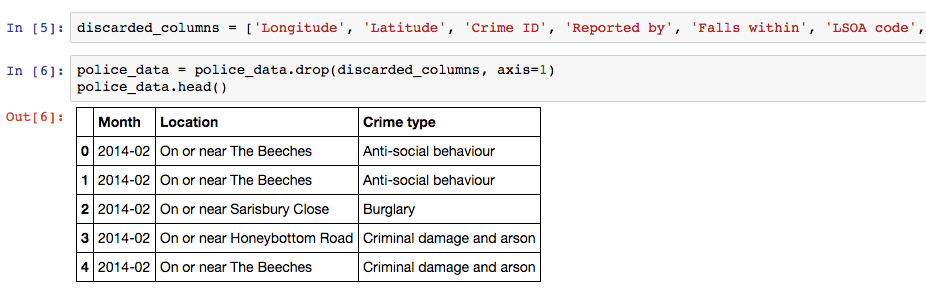
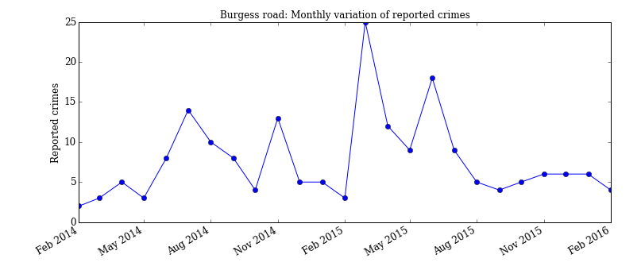
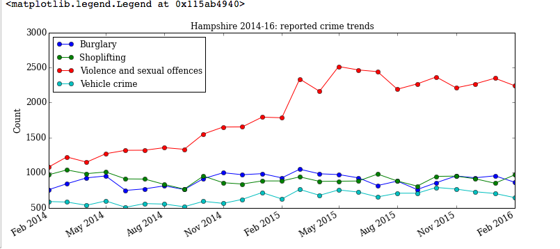
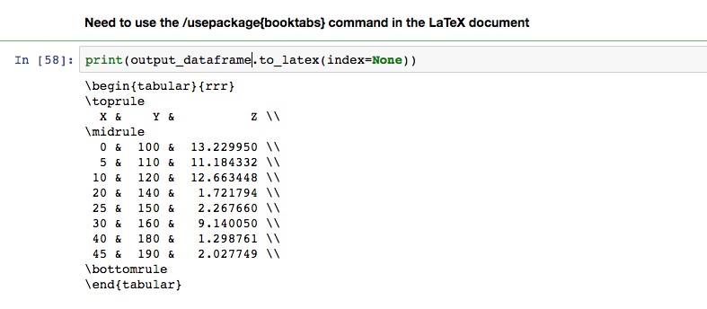
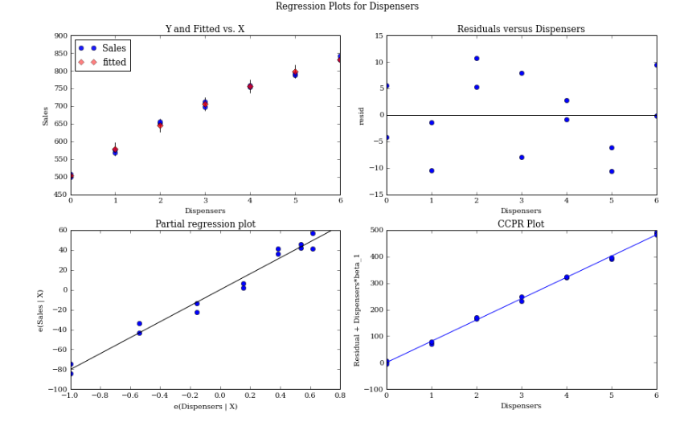

Published: Mon 25 April 2016
By Kieran Selvon
David Lusher
In Pandas .
tags: Python pandas
Python is a becoming an increasingly common high level programming language, excelling in easy implementation of scientific programming tasks. For statistical analysis however, environments such as R or Stata remain the first choice of most.
Pandas the Python Data Analysis Library, is an open source python library which allows advance data analysis to be performed in the python environment.
The workshop provided exercises and a demonstration of the Pandas library, material used in the workshop is available on the virtual machine, and the following link for those who wish to go through the exercises:
materials The zip file contains a demonstration notebook, presentation, exercises and solutions, and two datasets used for the material.
Alternatively if you don't have a Python installation, a virtual machine is available:
To download the virtual machine please download here: VM
The virtual machine has a light Lubuntu Linux distribution installed, the user name and password are 'feeg6003'. Import the appliance in VirtualBox.
From the desktop now press ctrl + alt + T to open a terminal, A Jupyter Notebook will open automatically. Navigate to the pandas folder on the desktop and open the ipython notebooks (.ipynb) for the demonstration and exercises.
Below is a summary of some of the workshop content and a guide of how to get started with Pandas.
Introduction to Pandas: crime example
We begin by importing the pandas and numpy libaries as pd and np respectively, and set the matplotlib inline command to display plots within the iPython notebook.
import pandas as pd
import numpy as np
% matplotlib inline
The basic data structure in Pandas is the dataframe, and for this demonstration we are reading in a dataset of crime statistics for Hampshire (UK) from csv files to demonstrate some of the functionality of Pandas for handling large sets of data. Our csv files are read in with the Pandas read_csv function, after creating a list of filenames to read in. The exclamation mark highlighted allows us to use Unix commands within the Python environment, and store the output of directories as a list to iterate over.
As each csv file is read in, the pd.concat function concatenates it into one large dataset for further processing.
files = ! ls ./ police /*/*. csv # IPython magic to find csv files
police_data = pd . concat ([ pd . read_csv ( f ) for f in files ])
police_data . head ()
Next we discard the unwanted columns with the pandas drop method as shown below, where the variable discarded_columns is a list of strings containing the column name labels we wish to drop. The .head() method returns the top five rows of our dataset, .tail() can be used for the last five; array slicing notation [:5] would also produce the top five rows.

For easy plotting of time-series, we use the to_datetime() method on the Month data to convert it into Pandas date format. Here the square brackets are used to alter the Month column within the dataframe police_data
police_data [ 'Month' ] = pd . to_datetime ( police_data [ 'Month' ])
Now we wish to filter our dataset into one where we concentrate on the location "Burgess Road", we create a new dataframe called university_crime, before creating a boolean mask and applying it to the original police_data dataframe. The str.contains method is applied to search for only the rows which contain the string "Burgess Road" in the location column, and the output is stored in the new dataframe.
In the second line we apply the value_counts() method to count the number of each crime type, and then plot the output as a bar chart displayed below.
university_crime = police_data [ police_data [ 'Location' ] . str . contains ( "Burgess Road" )]
university_crime_count = university_crime [ 'Crime type' ] . value_counts ()
ax = university_crime_count . plot ( kind = 'bar' , figsize = ( 12 , 5 ), title = 'Burgess Road crime distribution 2014-16' , fontsize = 12 )
If instead we are interested in a monthly breakdown of the number of reported crimes for this area, we simply filter the month column instead and apply the value_counts() method once more.
university_crime_monthly = university_crime [ 'Month' ] . value_counts ()
ax = university_crime_monthly . plot ( kind = 'bar' , figsize = ( 12 , 5 ), title = 'Burgess Road crime distribution 2014-16' , fontsize = 12 )

We are now interested in the time-series trends for different crime types for all of Hampshire. We create a list of crimes for comparison, loop over them and count the monthly frequency for that specific crime. The results are plotted within the loop and allows for direct comparison of how the various offences have varied over the two year period.
crimes = [ 'Burglary' , 'Shoplifting' , 'Violence and sexual offences' , 'Vehicle crime' ]
for crime in crimes :
crime_sort = police_data [ police_data [ 'Crime type' ] . str . contains ( crime )]
monthlycount = crime_sort [ 'Month' ] . value_counts ()
ax3 = monthlycount . plot ( kind = 'line' , marker = 'o' , label = crime , figsize = ( 12 , 5 ), \
title = 'Hampshire 2014-16: reported crime trends' , fontsize = 12 )
ax3 . set_ylabel ( "Count" , fontsize = 12 )
ax3 . legend ( loc = "best" )

In this summary we have seen how Pandas can be used to take a large dataset, extract the data of interest and use string searching and counting methods to obtain visual summaries. The full demonstration in the workshop material also contains use of the group_by method in Pandas, .describe() and some more in depth analysis of the crime statistics.
Converting Numpy data to LaTeX tables
In this section we briefly demonstrate how to convert data stored in Numpy arrays to a Pandas dataframe and then use one of the export methods to automatically generate LaTeX code for inclusion in a report.
Three columns of random data are generated in the arrays x, y, z, before being combined with the Numpy hstack command. A list of column labels is created, which is then passed into the pd.Dataframe command with the numpy array to create a new dataframe.
x = np . linspace ( 0 , 9 , 10 ) . reshape ([ 10 , 1 ]) * 5
y = np . linspace ( 10 , 19 , 10 ) . reshape ([ 10 , 1 ]) * 10
z = np . random . rand ( 10 ) . reshape ([ 10 , 1 ]) * 15
output = np . hstack (( x , y , z ))
column_labels = [ 'X' , 'Y' , 'Z' ]
output_dataframe = pd . DataFrame ( output , columns = column_labels )
At this point all that needs to be done to convert to a LaTeX table is to call the to_latex() method on the dataframe and print the output. The index=None argument here specifies that we don't wish to include the Pandas row numbering index in our final table.

Combining Pandas with the Statsmodels library
Arbitrary data representing the number of drinks sold as a function of number of drinks dispensers is used here to demonstrate how to perform a simple linear regression, and the compatibility between Pandas and Statsmodels.
In the following code segment we import the statsmodels api, read the data into a Pandas dataframe and fit an ordinary least squares regression using statsmodels. The residuals of the model are then plotted using the statsmodels plot_regress_exog function. As seen below the formula input, statistical summary and residual plots are all 'R' style, the short number of lines needed to produce these outputs demonstrates Pandas ability to bridge the gap between Python and R like stats languages.
import statsmodels.api as sm
Data = { 'Dispensers' : Dispensers , 'Dispensers2' : Dispensers ** 2 , 'Sales' : Sales }
df2 = pd . DataFrame ( Data , columns = [ 'Dispensers' , 'Sales' , 'Dispensers2' ])
linear_model2 = sm . formula . ols ( formula = 'Sales ~ Dispensers+Dispensers2' , data = df2 ) . fit ()
linear_model2 . summary ()
Now we have the linear model we plot the residuals below.
fig = plt . figure ( figsize = ( 12 , 8 ))
fig = sm . graphics . plot_regress_exog ( linear_model2 , 'Dispensers' , fig = fig )

The full demonstration, exercises and a set of solutions are available on the VM and the links provided at the start of this post. The exercises include a question on sorting through a dataset of films and their ratings. Resources for further reading about Pandas are also included in the demonstration file.